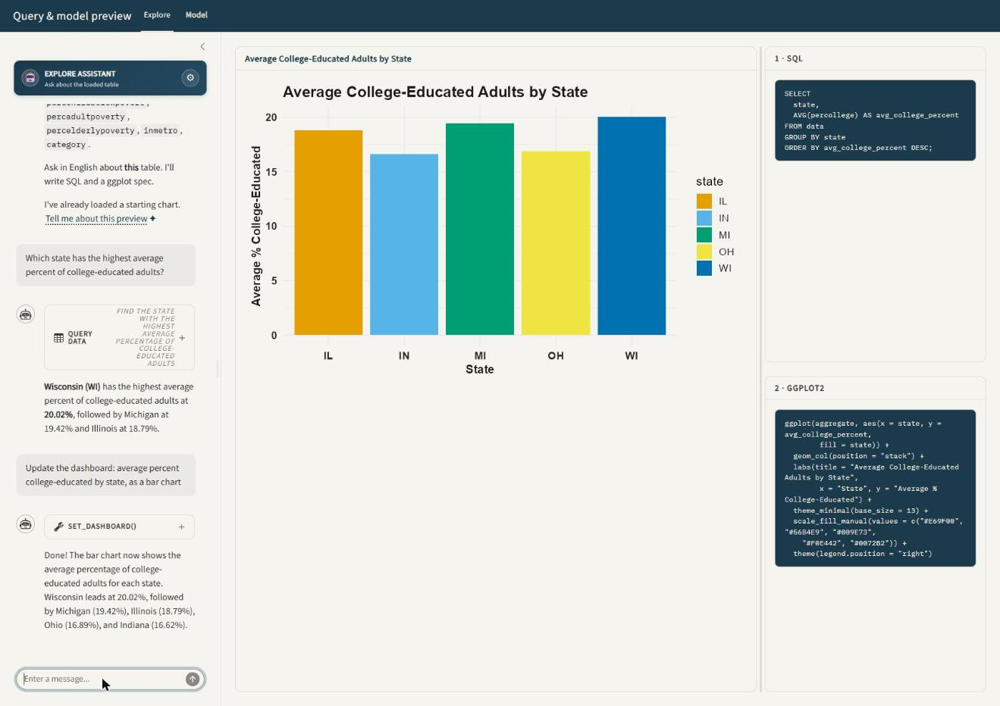
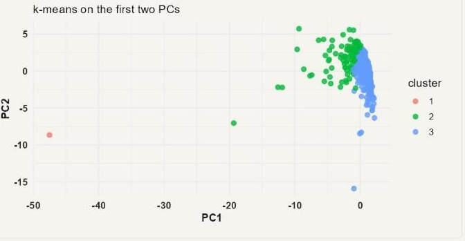

ellmer-practice
How a Shiny workbench turns English questions into SQL, ggplot2 charts, and tidymodels fits
Overview
ellmer-practice is a two-page Shiny app. Each page pairs a chat panel with a live preview: type a question in English, and the app turns it into a SQL query, a model fit, or both. It then redraws the chart and the code pane beside it.
- Explore answers questions with SQL against a DuckDB table and draws a ggplot2 chart from the result.
- Model fits a small regression, classification, forecast, statistical test, or unsupervised model on the same table and draws its diagnostics.
The chat model never sees raw rows. It sees a statistical profile of the loaded table — each column’s role, range, and missingness — and calls one typed tool per question. R runs the SQL or fits the model, and every session watches the same DuckDB table.

Architecture
One process, one table, many sessions
app.R opens a single file-backed DuckDB connection (dash_con) when the Shiny process starts, and writes the starter dataset into a table named data. Every browser session shares that connection. Loading a new dataset — a built-in source, an upload, or a file dropped into data/ — overwrites table data for the whole process, not just the current tab.
A module-level object, current_source, tracks the label, column names, row count, and preview of whatever is currently in table data. Each new session reads current_source at startup instead of the original starter dataset. A second tab, or a reload of the same tab, shows what an earlier session loaded rather than resetting to the original CSV.
Two chat clients, one tool contract each
app.R creates two querychat instances, qc (Explore) and qc_ml (Model), each wrapping its own ellmer chat client. Both point at the same DuckDB connection, so their built-in query tool can run read-only SQL directly. app.R then registers additional tools on each client’s underlying chat object:
| Tool | Registered on | Purpose |
|---|---|---|
set_dashboard |
Explore | Run up to two SQL queries and redraw the featured chart. |
describe_current_chart |
Explore | Describe the chart already on screen without changing it. |
describe_data |
Explore, Model | Return the column profile of the loaded table. |
set_model |
Model | Fit a model and redraw the Model page. |
describe_current_model |
Model | Describe the model already on screen without refitting. |
Each tool’s arguments are typed with ellmer::type_*() calls in R/tools.R. The model can only send fields the app knows how to interpret. Enum fields — geoms, themes, palettes, model methods — are built from the same registries the renderer uses. Adding a theme or a geom is one list entry, not a schema edit and a separate renderer edit.
File map
| File | Role |
|---|---|
app.R |
Shiny UI, server, data loading, and tool registration. |
R/profile.R |
Column profiler: infers a role (measure, count, category, clock, id, text, constant) for every column from its statistics. |
R/sql.R |
Runs read-only SQL, auto-picks a starting chart from a table’s profile, and holds the plot-spec vocabulary (geoms, sort keys, label formats). |
R/plot-recipe.R |
Turns a resolved plot spec into a ggplot2 recipe: a list of unevaluated layer expressions shared by the renderer and the code pane. |
R/theme.R |
Theme and palette registries for the featured chart. |
R/dashboard-view.R |
Wires the Explore page’s SQL results to a plot recipe and formats the tool’s return text. |
R/tools.R |
Typed tool schemas, sticky style merging, and tool-return formatting shared by both pages. |
R/model-tidymodels.R |
tidymodels helpers: workflow builders, prediction, coefficient tidying, partial dependence, tree layout. |
R/model-recipe.R |
Model-page plot recipes (one per plot key) and the R code shown in the code pane. |
R/model-view.R |
Dispatches a model spec to a fitter (fit_supervised, fit_forecast, fit_stat_test, fit_unsupervised), and formats the model card. |
R/stats-test.R |
t.test, ANOVA, chi-square, and correlation, selected from the shape of the two columns given. |
R/unsupervised.R |
PCA, k-means, and a pairwise correlation heatmap. |
R/providers.R |
Provider and model catalog for Anthropic and xAI, and in-place provider swapping. |
R/utils.R |
%or%, empty_to_null(), and other small helpers shared by every R/ file. |
data/ |
Bundled CSVs (orders.csv, food_delivery.csv, anscombe-quartet.csv) plus anything a user uploads. |
greeting.md, ml-greeting.md |
Static chat greetings shown before the first tool call, so startup does not spend a model call. |
extra-instructions.md |
Explore-page system-prompt judgment: when to slice versus break down, how to read a tool’s return. |
ml-instructions.md |
Model-page system-prompt judgment: which method family answers which question, how to read cross-validation. |
tests/testthat/ |
Characterization tests for the profiler, resolver, recipes, and tool schemas. |
Loading data
The settings popover, the gear icon above the chat panel, offers three ways to change what is in table data:
- A built-in source: the bundled
orders.csv, or one ofpenguins,mpg,diamonds,mtcars,iris,economics,txhousing,storms, ormidwestfrom base R and the tidyverse packages already on the search path. - Any
.csv,.tsv,.txt, or.parquetfile already indata/. A 2-secondreactivePoll()picks up a file dropped into the folder, so it appears in the dropdown without a restart. - A direct upload, copied into
data/and then loaded the same way as an existing local file.
Loading a new source calls apply_loaded_table(). It rebuilds the column profile, refits the system prompts for both chat clients, clears both chat histories, and reruns the default view and default model. The page never shows a chart or a model built from the previous table.
How a question becomes a chart
The column profile drives the prompt
R/profile.R assigns every column a role from its statistics, not its name: cardinality, integer-ness, sign, and, for date-shaped strings, a parsed calendar. A column named id only becomes role id if its distinct-to-row ratio actually looks like one. An integer column named year becomes a category, not a clock, unless it also looks like a Date. Roles feed three things: the auto-chosen starting chart, auto_features() for modeling, and format_profile_md(), the markdown table appended to the system prompt and returned by the describe_data tool.
The set_dashboard tool contract
On every data question, the Explore chat calls set_dashboard exactly once, sending:
| Argument | Contains |
|---|---|
title |
A short title for the chart. |
detail_sql |
Optional line-item SELECT against table data. |
aggregate_sql |
Optional grouped/summary SELECT, every expression aliased. |
plot |
The data mapping: from, geom, x, y, color, facets, sort, and axis labels. |
style |
The look: theme, palette, legend position, scales, and value labels. |
R/sql.R gates every query through is_read_only_sql(). It strips comments and string literals, then checks for a leading SELECT or WITH and rejects write keywords. A legal WHERE note = 'create' is not mistaken for a CREATE statement. A follow-up that only restyles the chart — “make it dark,” “add value labels” — omits both SQL fields. The tool reuses the dashboard’s last query results instead of rerunning them.
Resolving the plot spec
resolve_plot_spec() in R/sql.R turns the model’s raw arguments into a spec the renderer can trust:
- Column names are matched case-insensitively and punctuation-insensitively against both SQL results, so
Order Dateresolves againstorder_date. - A name that matches neither result is dropped, with a note the tool return surfaces back to the model.
- If the model puts a date column on
yand a number onx, the resolver swaps them and flips the chart. A clock never ends up scaled like a dollar amount. - An omitted
geomtriggersauto_spec_from_df(), which infers a chart from the result’s shape: a time series if a date and a measure both exist, a bar chart for a category and a measure, a histogram otherwise.
One recipe, two consumers
plot_recipe() in R/plot-recipe.R does not build a ggplot object. It builds a list of unevaluated layer expressions, a plot_recipe, using rlang::expr(). render_recipe() evaluates that list against the plotted data frame to produce the chart. deparse_recipe() prints the same list, cleaned up by pretty_r_code(), as the R shown in the code pane. Both panes read the same expressions, so the chart and the printed code cannot drift apart.
Style is sticky
R/tools.R keeps the dashboard’s style in a reactiveValues object: theme, palette, accent color, legend position, axis scales, and value-label formatting. Only the fields present in the current tool call overwrite it. Style set two questions ago survives until Reset, so “now make it dark” does not need repeating on every later question. A bare highlight argument survives a mapping change on its own.
How a question becomes a model

The set_model tool contract
set_model takes a single spec. The core fields are method, target, features, and prepare_sql. Method-specific fields cover the rest: time_col and horizon for forecasts, subgroup for a breakdown, plus interactions, cv_folds, auto_select, k, and threshold.
Fields the model omits keep their current value from mod$result, through merge_model_spec(). A lone subgroup = "region" follow-up re-renders the existing fit broken down by region, with no refit. ml-instructions.md tells the model this directly: a “break down by region” question is one call with subgroup=region, never one set_model call per region.
Method families
run_model_request() in R/model-view.R dispatches on method:
method |
Dispatches to | Notes |
|---|---|---|
regression, poisson |
fit_supervised() |
lm or a Poisson glm, via a parsnip/workflows pipeline. |
classification |
fit_supervised() |
Logistic glm for a 2-level target, multinomial (nnet) for 3–12 levels. |
ridge, elastic |
fit_supervised() |
glmnet, mixture 0 or 0.5. auto_select=true on any method fits a lasso (mixture 1) instead. |
tree, forest |
fit_supervised() |
rpart or ranger. Classification mode is inferred if the target has 2 levels. |
gam |
fit_supervised() |
mgcv; numeric predictors are wrapped in s(). |
forecast |
fit_forecast() |
Holt-Winters, or Holt without a full seasonal cycle, via stats::HoltWinters(). |
test |
fit_stat_test() |
Picks cor.test, Welch t.test, one-way ANOVA, or chi-square/Fisher from the shape of the two columns given. |
pca, kmeans, correlation |
fit_unsupervised() |
prcomp, stats::kmeans, and a pairwise cor() heatmap. |
Every supervised fit runs through the same pipeline in make_supervised_workflow(): a recipes::recipe() with dummy coding for non-tree engines, a parsnip model spec, and a workflows::workflow(). The lasso penalty for ridge, elastic, and auto_select fits comes from cv.glmnet()’s lambda.1se, not a fixed default.

plot=roc: true vs. false positive rate on the holdout, for a binary classification fit.
plot=tree (the tree method’s default): the fitted rpart tree, with leaves showing the predicted class or value.
plot=cluster (the kmeans method’s default): cluster assignment on the first two principal components.Holdout and cross-validation
split_frame() in R/model-tidymodels.R picks a holdout strategy from the data:
- A chronological split when the modeling frame has a date column.
- A seeded 80/20 random split otherwise.
- An in-sample fit, clearly labeled, when the table has fewer than 40 rows.
Every reported metric — RMSE, MAE, R², accuracy, AUC — comes from the holdout, scored against a named baseline. Regression compares to train-mean RMSE, classification to majority-class accuracy, and forecasts to last-value or seasonal-naive RMSE. cv_folds (default 5, 0 to skip) adds a second, independent estimate from rsample::vfold_cv() on the training rows only.
Two panels, one fit
The Model page always shows two charts side by side: an estimates panel (coefficients, when the fit has them) and a diagnostic panel. Both read the same fitted res object. Switching plot on the Model page’s tool call re-renders from the stored fit and does not refit. secondary_plot_key() in R/model-recipe.R picks the diagnostic panel’s default so it never repeats the estimates panel. A classification fit defaults to a confusion matrix; a regression fit defaults to actual-vs-predicted.
Switching language model providers
R/providers.R holds a small catalog of two providers, Anthropic and xAI, each with an environment variable and a list of models. The app starts on whichever provider has a key set, preferring Anthropic if both are present.
Picking a different provider or model in the settings popover calls attach_chat_provider(). It swaps the live ellmer chat object’s internal provider in place, so the conversation UI does not need to remount. The swap reaches into an undocumented ellmer field (private$provider) behind a version guard and a tryCatch(). A failed swap shows a warning instead of silently continuing on the old provider.
Known limitations
- One shared table per process. A second browser tab loading a new dataset overwrites the first tab’s data. This is a single-user preview tool, not a multi-tenant app.
- No second, read-only DuckDB connection. DuckDB cannot
ATTACHthe same file twice for a second reader on Windows. An in-processread_only = TRUEhandle still accepted aDROPin testing. SQL safety depends entirely on theis_read_only_sql()keyword and literal-stripping check, not on a database-level permission, and every chat-issued query passes through that gate. - Large tables are sampled for modeling.
fit_supervised()samples down to 8,000 rows before fitting. The profile falls back to a 200-row preview once a table passes 80,000 rows, so summary statistics on very large tables are approximate. - The provider swap is version-pinned.
attach_chat_provider()requiresellmer0.4.2 or later and reaches into a private field. Anellmerupgrade that renames that field disables in-place provider switching until the guard is updated.
Run the app
- Add at least one provider key (
ANTHROPIC_API_KEYorXAI_API_KEY) to your user.Renvironand restart R. SeeREADME.mdfor where to get a key. - From the
ellmer-practicefolder, runsource("setup.R")to install missing packages. - Run
shiny::runApp(), or openapp.Rand click Run App.
tests/testthat/ covers the profiler, the plot-spec resolver, the recipe builders, and the tool schemas. Run it with testthat::test_dir("tests/testthat") or devtools::test().